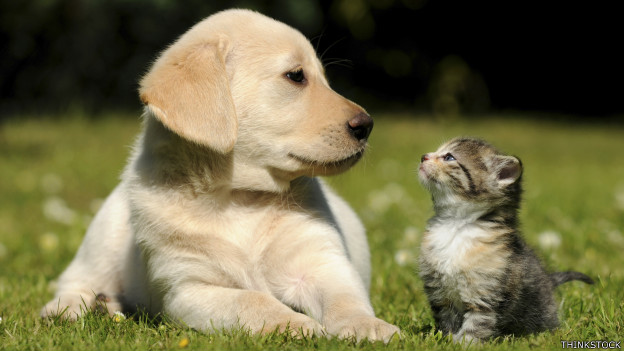

Este sábado 4 y domingo 5 de abril llega a Buenos Aires una nueva edición de Show your pet, la
convención
dedicada a las mascotas más importante de Argentina.

algunos ejempares 2025
Durante dos jornadas, el Centro de Convenciones de la Ciudad (CEC) se transformará en el punto de
encuentro para fanáticos, con actividades que van desde conciertos y experiencias inmersivas hasta
arte, concursos de mascotas y gastronomía.
El encuentro comenzará a partir de las 12 y se extenderá hasta las 20. Además, en la previa de la
convención, se llevará a cabo el tradicional Yamato Matsuri en Plaza Brasil, con entrada libre y
gratuita, que ofrecerá una experiencia cultural y gastronómica abierta a todo el público.
Categorias
Al permitir todas las especies (perros, gatos, aves, roedores, reptiles, etc.), el concurso adquiere
un enfoque más dinámico, inclusivo y enfocado en el entretenimiento y la comunidad, alejándose de
los estrictos estándares morfológicos de raza.
Para organizar el evento de forma atractiva, las categorías estaran divididas en cuatro bloques
temáticos:
Categorías por Habilidades y Adiestramiento
Premian el talento, el aprendizaje y la obediencia según la naturaleza de cada mascota.
El Rey del Truco: Para la mascota que realiza el mejor truco, pirueta o comando (dar la
pata,
rodar, dar la bienvenida, etc.).
Mascota más Obediente / Educada: Evaluando donde demuestren autocontrol o seguimiento de
órdenes.
El Más Veloz / Circuito de Agilidad: Ideal para perros, gatos o incluso roedores
recorriendo un
pequeño circuito casero o de competencia.
Mejor Habilidad Natural: Pensada para especies no convencionales (aves que hablan o
cantan,
reptiles realizando tareas, etc.).
Categorías Estéticas y de Fantasía
Garantizan gran interacción del público y contenido muy visual.
Mejor Disfraz / Cosplay: Premiación individual para el atuendo más creativo y original.
Doble Identidad (Duo Mascota-Dueño): El mejor vestuario coordinado entre el tutor y su
mascota.
La Mascota más Fotogénica (Miss y Mister Fotogenia): Evaluado exclusivamente por la
calidad
estética.
El Look más Estilizado / Mejor Pelaje o Plumaje: Cuidado, limpieza y belleza visual del
pelaje,
plumas, escamas o caparazón.
Categorías por Carácter y Personalidad
Ideal para que cualquier persona pueda participar con fotos o videos sencillos.
El Más Gracioso / Divertido: Las fotos o videos que capturen momentos cómicos o caras
insólitas.
El Más Dulce / Carismático: Aquel animal que transmita ternura a través de la cámara.
La Mascota más Relajada / Perezosa: La mejor toma de una mascota durmiendo en posiciones
divertidas o insólitas.
El Más Travieso: Para aquellas mascotas capturadas "in fraganti" cometiendo alguna
travesura
inocente.
Categorías por Especie o Votación del Público
Todas las especies tienen representacion y dinamismo en el evento
El Favorito del Público (Voto Popular): La mascota que reciba más aplausos.
Mejor Historia de Adopción o Rescate: Un premio especial con formato narrativo donde el
jurado o
el público valore la historia de vida del animal.
CRONOGRAMA OFICIAL DEL EVENTO:
12:00 hs - 13:00 hs | APERTURA Y ACREDITACIÓN
Recepción de participantes y control veterinario en el ingreso.
Entrega de números e identificación de las mascotas.
Bienvenida inicial en el escenario principal.
13:00 hs - 14:30 hs | BLOQUE 1: CONCURSO DE TALENTOS Y DESTREZAS
Abierto a todas las especies (perros, gatos, aves, exóticos, etc.).
Evaluación de trucos, obediencia, agilidad y habilidades especiales.
Entrega de reconocimientos del bloque.
14:30 hs - 15:30 hs | RECESO Y CHARLA DE TENENCIA RESPONSABLE
Pausa para descanso e hidratación de los animales.
Espacio informativo sobre cuidado y bienestar animal en el escenario.
15:30 hs - 17:00 hs | BLOQUE 2: DESFILE DE BELLEZA Y CARISMA
Presentación general de mascotas divididas por grupos de especies.
Evaluación del jurado: apariencia, cuidado, simpatía y conexión con el tutor.
Entrega de reconocimientos del bloque.
17:00 hs - 18:30 hs | BLOQUE 3: GRAN CONCURSO DE DISFRACES (MASCOTA Y DÚO)
Desfile temático de disfraces y caracterizaciones.
Participación en modalidad individual (mascota) o en dúo (mascota + tutor).
Cierre de la votación web para el "Favorito del Público".
18:30 hs - 20:00 hs | DELIBERACIÓN Y GRAN PREMIACIÓN FINAL
Conteo de votos de la página web y deliberación de jueces.
Entrega de premios principales y diplomas a los ganadores de cada categoría.
Coronación de la "Mascota del Evento" y palabras de clausura.
¿Cómo comprar las entradas para Show your pet 2026?
Las entradas para la Show your pet 2026 pueden adquirirse de forma online a través del sitio web de
Ticketek o en la boletería del evento durante los días del evento.
Entrada general: $37.900
Entrada premium: $48.900
Entrada VIP: $74.900
Los menores de 10 años ingresan sin cargo presentando DNI, siempre que estén acompañados por un
adulto
con entrada.
Así se Vivió la Edición Pasada
¡Así fue nuestra edición anterior! Revive los mejores momentos de la Convención [Año] en este video
resumen. Un recorrido por las sonrisas, las increíbles presentaciones y el gran talento de las
mascotas y sus familias que hicieron de esta jornada un evento inolvidable. ¡Dale play y prepárate
para lo que se viene este año!